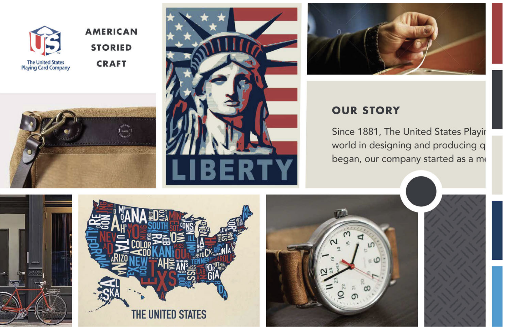
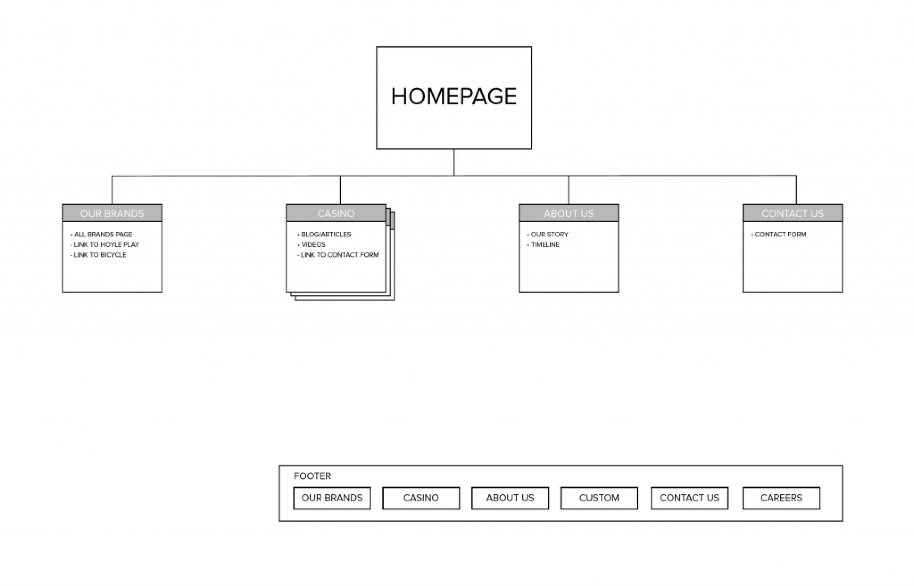
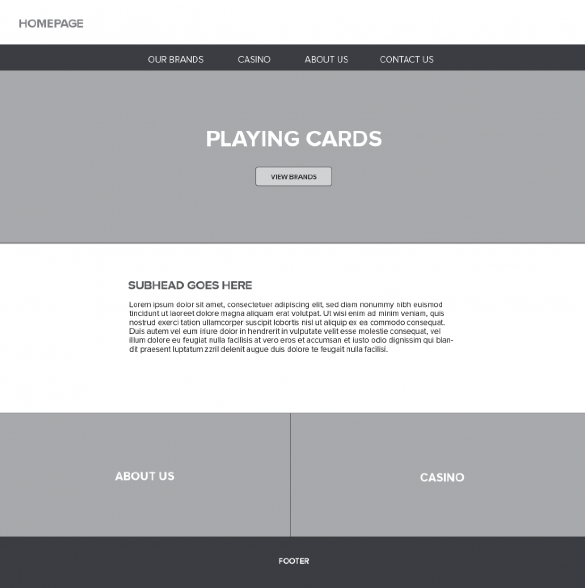
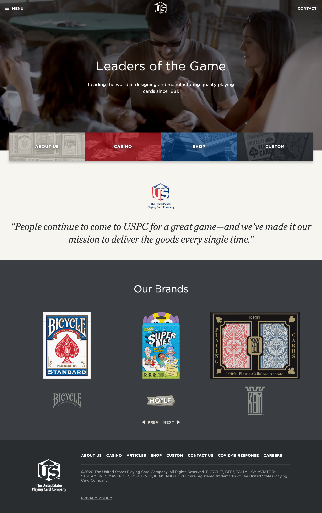

U.S. Playing Card Company
Wordpress website design & development
Challenge
Create a website that tells the story and history of The U.S. Playing Card Company
The United States Playing Card Company was created in 1876 in Cincinnati, Ohio. Much of the company’s effort has been directed toward their flagship brand, Bicycle Cards. Today, USPC has over 150 years of history and over 10 different card brands under its name. They came to me at Icon Marketing Communcations to develop a new website. Their goal was twofold: to tell the story and history of the USPC and to connect with casinos via articles and trade shows.
However, it was clear that there were no brand assets or visual direction for the site other than the logo. The challenge was expanded to a full digital brand project, spanning from establishing a visual style, information architecture, and the website design.
Moodboard
Sitemap
Wireframes
Solution
Create a website that celebrates a new visual identity dubbed “Handcrafted Americana”
We then designed hi-res mockups and put them into an Invision project for the client to experience how the project would ultimately be built. We established early on that the site would be using WordPress as a CMS for the client to be able to edit content.
Homepage
Additional Pages
Results
Stacking the deck for the leaders of the game
This website was my first opportunity to develop a Wordpress website using the Gutenburg content management layout. I enjoyed learning the new framework and the flexibility it allows clients for new layout ideas. This project also taught me the value in understanding a client brand at the start of the project. The moodboard design made by my creative director, Jeff Nabors, gave us a point of reference for the entire project.
Shortly after this website went live, the U.S. Playing Card Company was acquired by Cartamundi, an international board and card game manufacturer based out of Belgium.
Responsibility
Art direction, Consulting, UI Design, Front-End & Wordpress Development
Additional Credits
Jeff Nabors, Creative Director
Keane Anderson, Digital Designer
Joe McLaughlin, Client Services